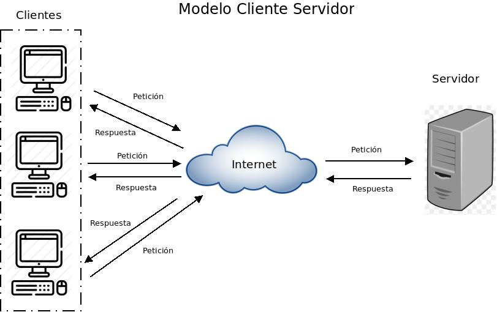

Arquitectura de Computadoras
Introduccion
Semana 2.

Breve descripcion de la Aritmetica de Binarios
La Unidad Aritmetico Logica, en la CPU del procesador, es capaz de realizar operaciones aritmeticas, con datos numericos expresados en el sistema binario. Naturalmente, esas operaciones incluyen la adicion, la sustraccion, el producto y la division. Las operaciones se hacen del mismo modo que en el sistema decimal, pero debido a la sencillez del sistema de numeracion, pueden hacerse algunas simplificaciones que facilitan mucho la realizacion de las operaciones.
Aritmetica de BinariosBalotario de Aritmetica de Binarios
Semana 3.

Resumen y Problemas Resultos sobre Algebra de Boole
Es una rama especial del algebra que se usa principalmente en electronica digital. El algebra booleana fue inventada en 1854 por el matematico ingles George Boole. El algebra de Boole es un metodo para simplificar los circuitos logicos (o a veces llamados circuitos de conmutacion logica) en electronica digital.
Resumen de Algebra de Boole Ejercicios y Resoluciones con EvidenciasSemana 4.
Breve Resumen de Circuitos Combinacionales
Circuito combinacional. Esta formado por funciones logicas elementales ( AND, OR, NAND, NOR, etc. ), que tiene un determinado numero de entradas y salidas. Es un circuito cuya salida depende solamente de la "combinacion" de sus entradas en el momento que se esta realizando la medida en la salida. Los circuitos de logica combinacional son hechos a partir de las compuertas basicas compuerta AND, compuerta OR, compuerta NOT. Tambien pueden ser construidos con compuertas NAND, compuertas NOR, compuerta XOR, que son una combinacion de las tres compuertas basicas.
Resumen de Circuitos CombinacionalesSemana 5.
Breve Resumen de Tipos de Arquitecturas de Computadora
La arquitectura de computadoras es el diseno conceptual y la estructura operacional fundamental de un sistema de computadoras. Es decir, es un modelo y una descripcion funcional de los requerimientos y las implementaciones de diseno para varias partes de una computadora, con especial interes en la forma en que la unidad central de proceso (CPU) trabaja internamente y accede a las direcciones de memoria.
Tambien la arquitectura del computador esta basado en tres grandes principios que se aplican a todo dispositivo o componente del computador, estos tres principios son: velocidad, capacidad y tipo de conexion.
Tambien suele definirse como la forma de interconectar componentes de hardware, para crear computadoras segun los requerimientos de funcionalidad, rendimiento y costo.
Resumen de Tipos de Arquitecturas de ComputadoraSemana 6.
Breve Resumen de Componentes Internos del Computador
En el interior de un gabinete de computadora, veras cables y conectores yendo y viniendo de un lado a otro, Una cosa que hay que recordar es que cada computadora es distinta en cuanto a su interior se refiere. En algunas computadoras la tarjeta de video esta integrada a la tarjeta madre (motherboard) mientras que en otras computadoras, la tarjeta de video puede estar puesta en un conector PCI o AGP como una tarjeta con mejores capacidades y velocidades. Veremos un vistazo general de los tipos de componentes internos de una computadora. Hay que recordar que el interior de una computadora varia de modelo a modelo.
Resumen de Componentes Internos del ComputadorPequeno video de los Componentes Internos de una Computadora

Semana 8.
Breve Resumen de Sistemas operativos e Interrupciones
Una interrupcion es una suspension temporal de la ejecucion de un proceso, para pasar a ejecutar una subrutina de servicio de interrupcion, la cual, por lo general, no forma parte del programa, sino que pertenece al sistema operativo o al BIOS. Una vez finalizada dicha subrutina, se reanuda la ejecucion del programa.
Resumen de Sistemas operativos e InterrupcionesInterrupciones mas Importantes en una tabla
Semana 9.

Breve Resumen de Arquitectura de Servidores
La arquitectura cliente-servidor es un modelo de diseno de software en el que las tareas se reparten entre los proveedores de recursos o servicios, llamados servidores, y los demandantes, llamados clientes. Un cliente realiza peticiones a otro programa, el servidor, quien le da respuesta. Esta idea tambien se puede aplicar a programas que se ejecutan sobre una sola computadora, aunque es mas ventajosa en un sistema operativo multiusuario distribuido a traves de una red de computadoras.
En esta arquitectura la capacidad de proceso esta repartida entre los clientes y los servidores, aunque son mas importantes las ventajas de tipo organizativo debidas a la centralizacion de la gestion de la informacion y la separacion de responsabilidades, lo que facilita y clarifica el diseno del sistema.
Resumen de Arquitectura de ServidoresArquitectura de un Servicio Existente
Evidencias del Taller de Hardware
Evidencias del Taller de Hardware
Evidencias del Taller de HardwarePowered by w3.css